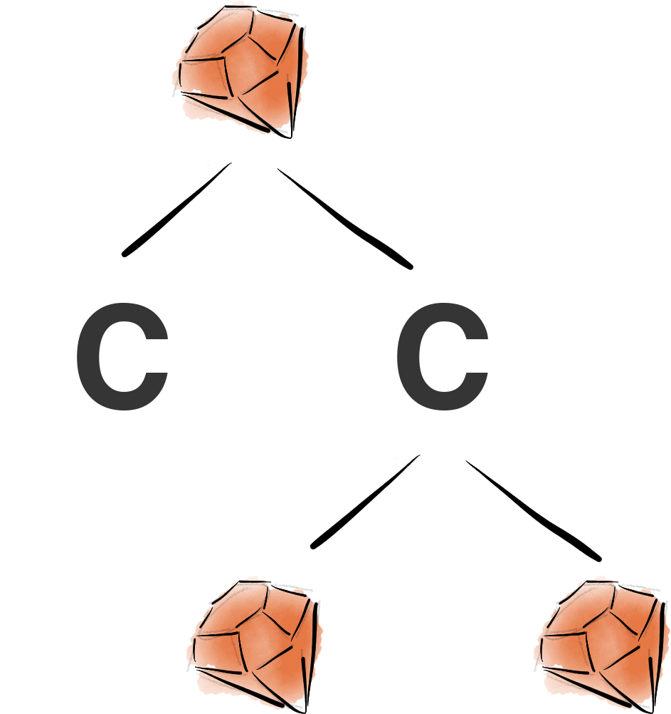

Very High Performance C Extensions For JRuby+Truffle
Matthias Grimmer and Chris Seaton, 27 October 2014
C extensions are a big part of the Ruby ecosystem. They allow people to write Ruby programs to include C code for a variety of purposes. They may hope to make their Ruby program run faster, to access compiled libraries such as database drivers, or re-use existing code already written in C.
Some people debate whether or not C extensions are a good thing, and whether or not new implementations should continue to support them or if instead people should rewrite their extensions in pure Ruby or in the case of JRuby, in Java. The reality is that there are a lot of existing C extensions in RubyGems, and some people just wish to write C extensions. We want to let them do that while still having a high performance Ruby implementation.
C extensions are a tricky feature for any project trying to create a new implementation of a language such as Ruby. The problem is that for many languages the C extension API is simply the internal implementation of the original Ruby implementation, MRI. We've seen this problem before in Python, where new implementations such as PyPy can make great progress re-designing the internals of these languages to achieve high performance, but then they get stuck when they need to somehow provide the same API for C extensions. For some people, good support for C extensions is a deal-breaker.
One solution is to use a different kind of native interface such as a formal FFI designed independently of any implementation. Here the C code that you call doesn't use any kind of specific language API, and it is up to the dynamic language to marshal types so that they can be used from C. Python has this in CFFI and Ruby in FFI. FFIs provide a clean interface that is easier to implement, but the reality is most extensions are not using them, and we can't rewrite people's extensions on their behalf.
Our new solution in JRuby+Truffle is pretty radical - we're going to interpret the C source code of your extension. We use the same high performance language implementation framework, Truffle, and dynamic compiler Graal, to implement C in the same way as we have implemented Ruby. Even though we are running on top of a VM we still support low level parts of C such as pointer arithmetic. In fact we support enough to run a couple of unmodified real C extensions that people are using in production today.
As we'll explain, JRuby+Truffle with an interpreter for C extensions is actually faster than running compiled C extensions using MRI!
Ruby's C Extensions in MRI
MRI has no problem supporting C extensions because the C extension API is simply the internal functions and data structures that MRI uses to implement Ruby. When your C extension calls the Ruby API you're using the same runtime functions as MRI is to interpret your Ruby program.
To give a specific example of how tightly MRI and the Ruby C API are coupled, we can look at the RARRAY_PTR macro. This takes an object (a VALUE, which is basically a void*) that should contain an Array and returns a VALUE* pointer to the C array of objects that implements the array. The C extension can then pass this VALUE* around, do pointer arithmetic on it, pass a pointer to the middle of the array to other functions, dereference it to read or write into the array, and use library routines such as memcpy. The same kind of problems also exist for String and the RSTRING_PTR macro.
Existing Support for C Extensions in Rubinius and JRuby
The Ruby C extension API described above is a very convenient interface for MRI to provide. MRI always represents objects as a VALUE, and always represents an array of objects as VALUE*, so it can just provide direct access to that array to the C extension.
More recent implementations of Ruby such as Rubinius, JRuby and Truffle may want to store arrays in a more efficient manner. For example if we have an array of Fixnum objects, instead of tagging them and storing them as a VALUE we might like to store the type once and then store them as a int[]. Rubinius and JRuby currently do not have a way to do that while still providing the same API that C extensions expect.
JRuby used to have support for C extensions, built as part of a Google Summer of Code project a few years ago. Since then it's been removed from the main code base and due to a lack of developer resources it isn't maintained at the moment.
The current JRuby support for C extensions and the RARRAY_PTR macro is a great example of how difficult this problem is to solve if you want a Ruby implementation that can optimise. The JVM, on which JRuby is built, has several sophisticated garbage collectors. In order to achieve high performance they expect to be free to move memory around whenever they want. This allows them to compact the heap, to evacuate from one area of memory to another. However C extensions expect to receive a pointer to a Ruby array and then do whatever they want with it.
To bridge between these two expectations, JRuby's existing C extension support stores two copies of the array - one in the JVM and one in the native memory. When you request an array pointer via RARRAY_PTR JRuby will copy the array from the JVM to native. The real problem is that the C extension can do whatever it wants to this array, so JRuby must keep copying the data back and forth. In fact it must do this on every context switch from Java to native, and it must keep doing it as it has no idea what you could have done with the pointer. This absolutely cripples performance (as we'll show later), but it's probably the best that could have been done by the authors of JRuby's C extensions on a conventional JVM.
As parts of Rubinius are currently implemented in a native language, C++, the separation between their VM and the C extension is not as stark as it is with JRuby on the JVM, but at the moment allowing for C extensions still prevents important optimisations, and so the performance of C extensions on Rubinius is still limited.
Truffle's Solution
You may think of C as being a language that is natively compiled ahead of time to machine code, but that isn't an essential property of the language. As long as a C interpreter does the same thing with your C program as a C compiler would, it shouldn't make a difference to you.
As with Ruby, our C interpreter parses C source code to an abstract syntax tree. We walk this AST recursively, executing the children of each node, and the performing the semantic action. The basic nodes in C aren't that much different to those in Ruby. The if, while and + nodes for example look very much the same. More complicated parts of C such as goto are a little more sophisticated, using Java exceptions to model the jumps, but it's still just an AST interpreter. Things that most interpreted languages don't do, such as pointers and reading from or writing to native memory, are done using Java's long type and the Unsafe class. The Graal compiler is good enough to replace these basic operations with code that is equivalent to what you would get from a C compiler, so although it looks like we're using objects and methods to do something as simple as reading and writing memory, in reality the overhead is minimal.
To implement the Ruby API in TruffleC we use the cross-language interoperability feature of Truffle. This allows us to take values or objects from one language, such as Ruby, and use them from another language such as C. In the case of the Ruby API this means that when we pass an Array into the C interpreter we can just pass that object in, without having to copy it or wrap it up into some kind of interface. To implement API functions such as rb_iv_get, which reads an instance variable from an object, we read from the instance variable from the object in the same way that you read a field from a struct in C. The C interpreter does not recognise the object, so it asks the Ruby interpreter for a snippet of code to perform the required action. That snippet gets inserted into the AST of the C code, in exactly the same way as a normal struct read would be.
The interpreter approach turned out to be really well suited to C extensions because we can abstract away from the way that C is normally implemented. Going back to the RARRAY_PTR example, TruffleC returns a value from that macro that appears to be a VALUE*, and can be read, written, dereferenced and stored as normal, but it's really an object that intercepts reads and writes and performs a custom action - in our case reading and writing values from our highly optimised Array optimisation. You think you're using a VALUE* and reading and writing raw memory, but really you're implicitly calling Ruby methods. Pointer arithmetic and inner pointers create more of these special objects that refer to the array and include an array offset, allowing the powerful JVM GC's to continue to work as normal, moving the array around even though you have a pointer to it.
The benchmarks we evaluated below are just C source code and do not link to compiled binary libraries, except for the MRI API. This is often the model for C extensions that are designed to improve on the performance of pure Ruby gems. Some C extensions are written to call binary libraries such as database drivers. We support this by allowing for native calls that leave the Truffle C interpreter. We've added special support to the Graal compiler for making these calls very fast.
Performance
We say that we 'interpret' C, but as with Ruby, Truffle will dynamically compile C to machine code on our behalf, using Graal, in order to achieve high performance. In reality, is this approach going to be able to match the performance of C extensions compiled ahead of time using a compiler like GCC?
When GCC compiles your C extension, it produces the best code that it can. In a straight up competition between Truffle and GCC we would probably lose. However GCC only sees your C extension code, where Truffle sees your Ruby code, the C extension code, and then the Ruby code it calls back into, all at the same time. It also has the advantage over GCC in that it uses how your code is actually running - GCC can only see the code statically without any data running through it.
As a concrete example, consider a C extension that allocates and returns an array of three values, as a kind of multiple return. Some of the C extensions we evaluated below do just this.
GCC can only see the array being created and returned, so it has to call malloc and actually allocate it on the heap. What Truffle can see at runtime, that GCC could not, is that the values are immediately taken out of this array by the caller, and then the array is never used again. Truffle can elect to not allocate any array, and to inline the C function into the Ruby calling method so the values that were put into the array can just be used from the local variables that would have gone into the array. In practice, this means keeping them in registers, or at a stretch on the stack. Writing to a couple of registers is whole orders of magnitude faster than calling malloc.

There are many other examples of the power that compiling C and Ruby together give us. We can inline through multiple methods and functions across languages. We can infer types from one language to another. We can compile multiple copies of the C code if it is called with different types or values. We can create caches in the C code to store data such as predicted values.
With these kind of optimisations we can actually achieve higher performance than MRI running natively compiled C extensions.
Evaluation
We used the same benchmarks as we used in the Pushing Pixels blog post, psd_native and oily_png. These are two gems for processing PNG and Photoshop files. There are pure Ruby versions, psd.rb and chunky_png, and then the gems we are using are optional C extensions to increase performance.
These C extensions are used in production today and we haven't modified them except to fix a couple of bugs and to replace a couple instances of dynamic sized arrays allocated on the stack - this is a C99 feature we don't support yet. We took all the methods with C extension equivalents - we didn't pick and choose which to run.
All experiments were run on a system with 2 Intel Xeon E5345 processors with 4 cores each at 2.33 GHz and 64 GB of RAM, running 64bit Ubuntu Linux 14.04. Where an unmodified Java VM was required, we used the 64bit JDK 1.8.0u5 with default settings. For JRuby+Truffle we used the Graal VM version 0.3. Native versions of Ruby and C extensions were compiled with the system standard GCC 4.8.2. Timing measurements are taken after a warmup period.
This graph shows the average performance of all 43 C extension methods run in different implementations of Ruby, normalised to the speed of MRI running the pure Ruby methods. You can see how C extensions are being used here to achieve a 10x performance increase when run in MRI. However the limitations we have discussed mean that performance in Rubinius and JRuby is only 4.2x and 2.5x. Here these more advanced implementations are actually much slower than MRI. JRuby+Truffle runs the C extensions at 3x the speed MRI runs the native code.
In order to show where the performance increase is coming from we disabled the key optimisation - inlining between Ruby and C, and can show how then performance is only a little faster than MRI.
A paper accepted for publication at Modularity next year describes in detail the performance of all the individual benchmarks, the error in these measurements, and the experimental setup in more detail.
Conclusions
There are other advantages to our approach over the ones used by other Ruby implementations. We remove the extra step of compiling the C code. We remove the need for either a C compiler on the client or to distribute machine code. We improve the security model by running the C code in a managed environment. We can use debuggers, profilers and other tools that understand both languages at the same time. We can report backtraces for both C and Ruby.
The currently proposed solution for C extensions is to transition to an FFI, but that provides none of these benefits. The key benefit of an FFI, freeing implementations from having to provide a particular native API, is also achieved by the abstraction in our C interpreter.
Many of our features would be compelling on their own, but when combined with the 3x speedup compared to MRI running native code, the advantage of the approach of interpreting C extensions rather than running them natively is really clear.
Charles Nutter has suggested that we could also use the Truffle implementation of C extensions without using the Truffle implementation of Ruby. This should be possible; but without the cross-language inlining capability and so performance is more likely to be around that of MRI with C extensions.
More details
This blog post is a short version of our paper accepted for publication at Modularity 2015, 'Dynamically Composing Languages in a Modular Way: Supporting C Extensions for Dynamic Languages' by Matthias Grimmer, Chris Seaton, Thomas Würthinger and Hanspeter Mössenböck. If you'd like to read it, email us and we can send out individual pre-prints.
Our C extension work is an early experiment, so the source code isn't available at the moment.
If you want to know more about Truffle and how we implement both Ruby and C extensions, find Chris Seaton at RubyConf in November, or Matthias Grimmer at Modularity in March.
Acknowledgements
We're grateful to the authors of the two gems we used, Willem van Bergen, Ryan LeFevre, Kelly Sutton, and others. Tim Felgentreff helped us understand C extension support in JRuby. Benoit Daloze and Johan Lundahl reviewed drafts for us. JRuby+Truffle is built on code from the JRuby and Rubinius projects, and the huge engineering effort that has gone into the JVM, Truffle and Graal.
- Deoptimizing Ruby
- Optimising Small Data Structures in JRuby+Truffle
- Pushing Pixels with JRuby+Truffle
- Tracing With Zero Overhead in JRuby+Truffle
- How Method Dispatch Works in JRuby+Truffle
- A Truffle/Graal High Performance Backend for JRuby
- Chris Seaton's website
comments powered by Disqus